Know the surface preparation standards before painting.
Read and listen
The voice reads the key points slowly. Pause any time.
- Why prepSurface prep is up to 40% of the cost of a repainting job.
- White MetalSSPC SP 5. The cleanest and most expensive.
- Near WhiteSSPC SP 10. Good enough for most severe service.
- CommercialSSPC SP 6. For non-corrosive service.
- Brush OffSSPC SP 7. Cheapest in the short run.
- Oil and greaseBlasting does not remove oil and grease. Solvent clean first (SP 1).
- OrderISO 8501 grades go up with work done. SSPC numbers do not follow that order.
Games
Pictures come straight from the course documents. Questions come from the course answer keys and safe work procedures. Each one names its source.
Loading…
Loading…
Loading…
Loading…
Loading…
Loading…
Pictures from the course
36 pictures. Open a document to see them. Tap a picture to make it bigger.
Comparing Surface Prep Standards - SSPC NACE and ISO 8501 (11)

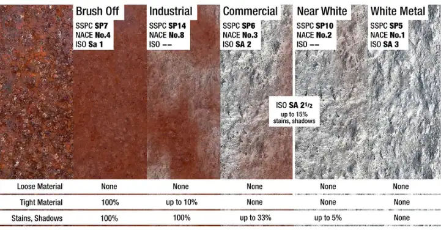

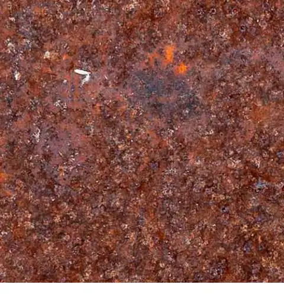

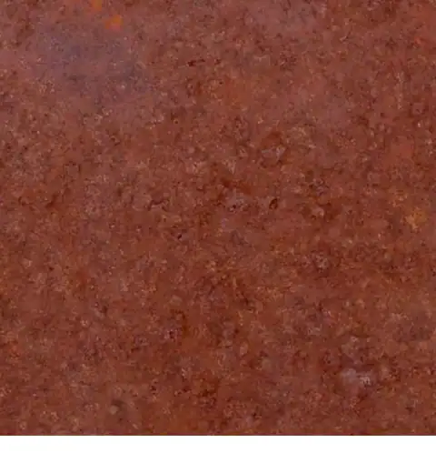

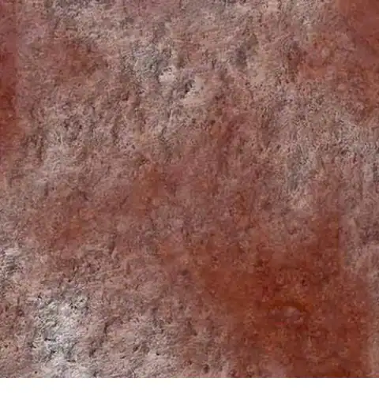

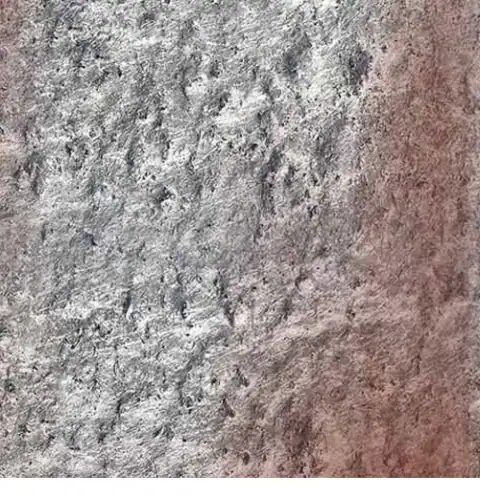

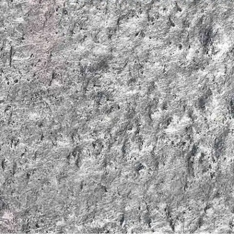

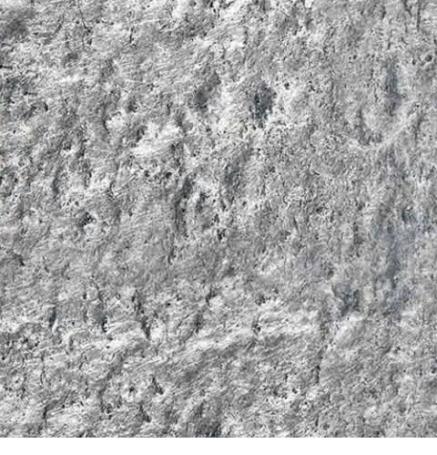

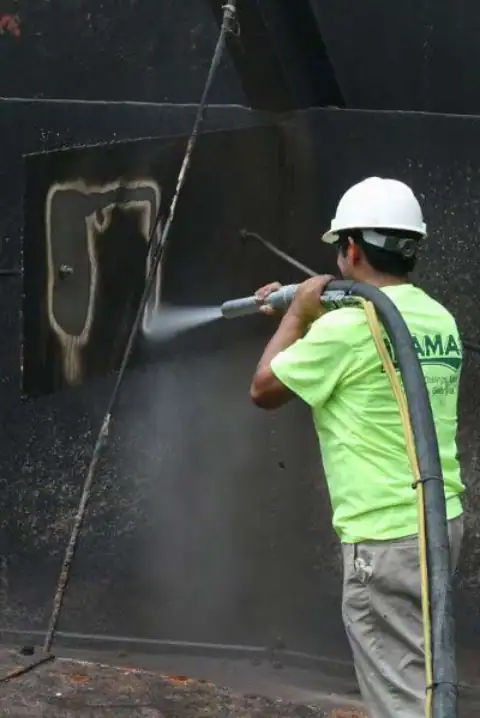


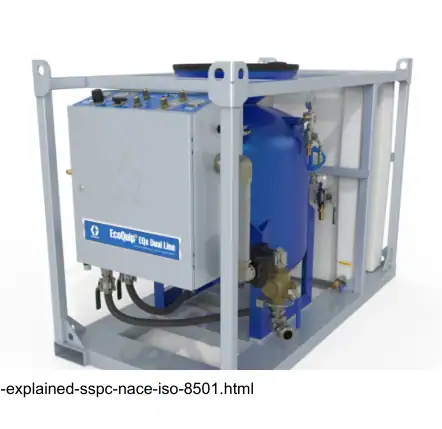

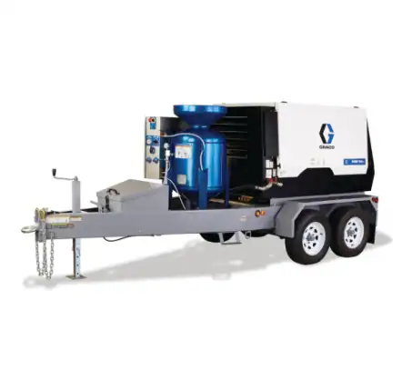
STEL FAB LEVEL 1 LEARN GUIDE (JULY 2009) 10033401 (25)

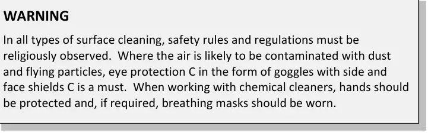

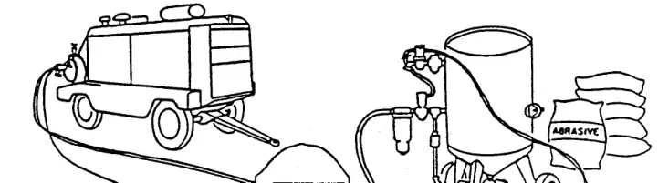

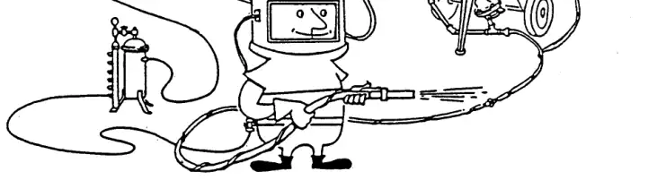

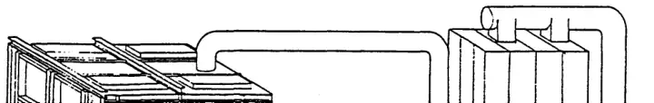

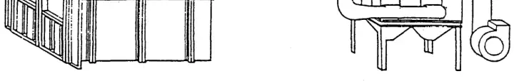

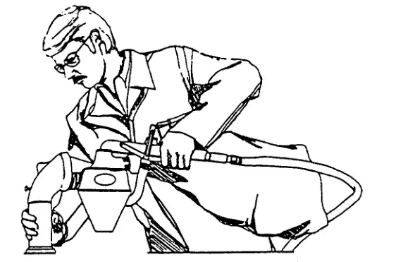

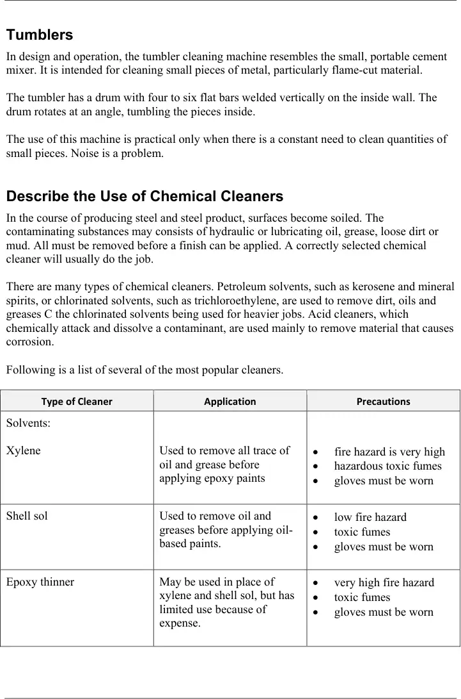

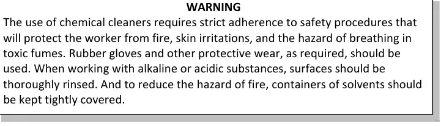

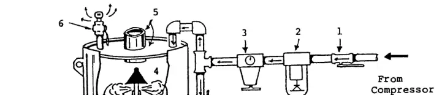

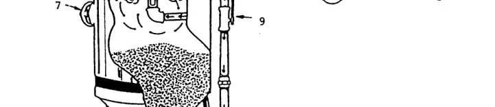


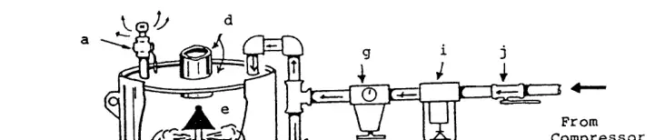

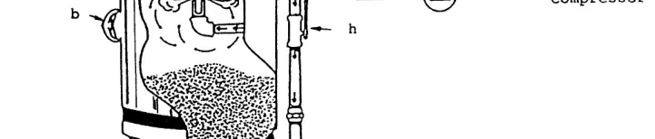

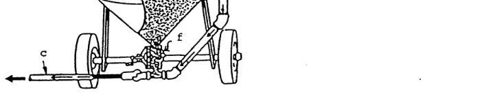


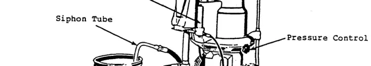

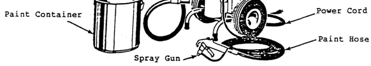

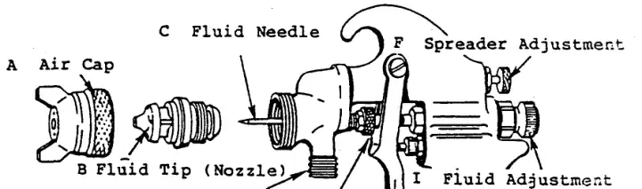

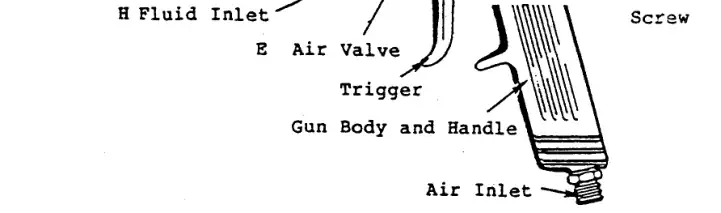

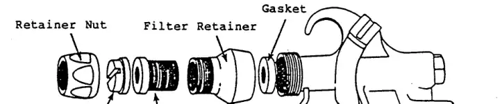

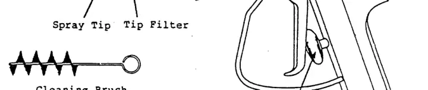

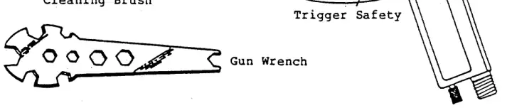

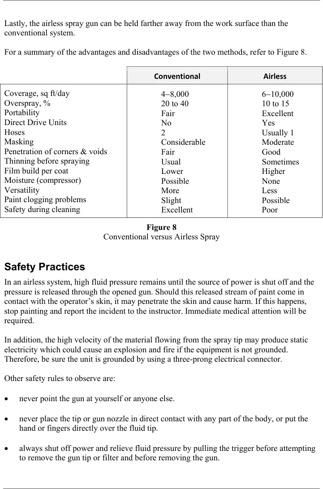

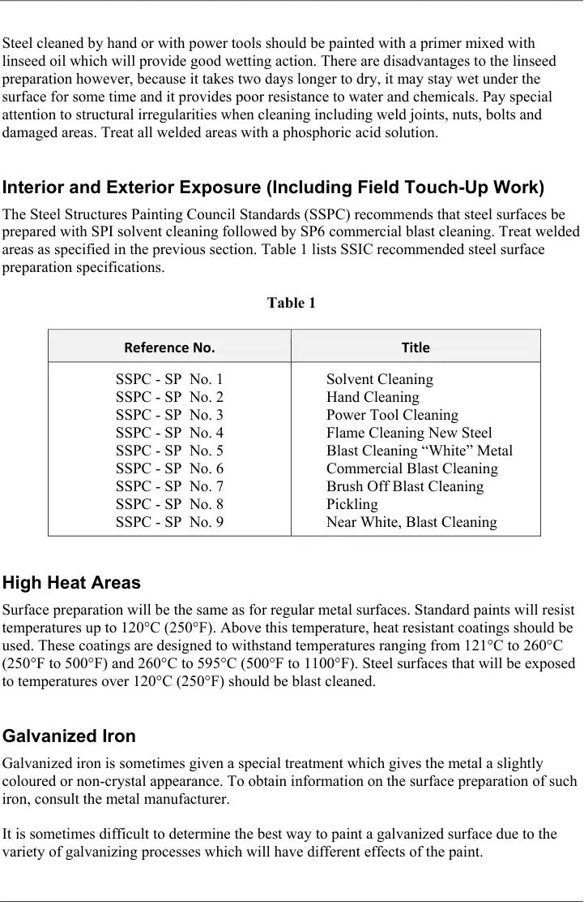

Documents in this module
- 1255_Project_Finishing/Comparing Surface Prep Standards - SSPC_NACE and ISO 8501.pdf 5 pages, 11 pictures